Minimum Cost Maximum s-t Flow
程度★★ 難度★
Minimum Cost Maximum s-t Flow
「最小成本最大流」。一張圖（流網路）上的每一條管線，除了有容量限制以外，還擁有單位成本──可以為正值，也可以為負值或零。現在水流流過管線時，每單位流量都會花費成本：
水流流過一條管線的成本，等於該條管線其流量與單位成本的乘積；一條小小涓流的成本，等於累加水流路徑上每一條邊其流量與單位成本的乘積；一個流的成本，等於累加圖上每一條邊其流量與單位成本的乘積。最小成本最大流就是指成本最小的最大流，可能會有許多個。
【註：cost在台灣譯作「成本」，詞意不太符合原意。讀者不妨把cost想做是「費用」──水流流過管線時需要付出費用，我們要儘量減少開銷。】
UVa 10594 ICPC 5095 3562
Minimum Cost Maximum s-t Flow: Cycle Canceling Algorithm
程度★★ 難度★
演算法
一、先找一個最大流。 二、在剩餘網路上，不斷找負成本環，建立迴流降低成本。 直到找不到負成本環為止，即是最小成本最大流。
在一個最大流當中，建立一條封閉的迴流，不會影響總流量，也不會違反流量守恆的規則，雖然會浪費容量空間，但是有機會減少總成本。事實上可以證明，剩餘網路沒有負成本環，即是最小成本最大流，證明省略之。
尋找負成本環
尋找一個負環，可以使用Bellman-Ford Algorithm或者其他演算法。整個演算法過程中，最多出現C個負成本環，C是最大的管線容量上限；時間複雜度為O(VEC)，不是多項式時間。
理想狀況下，使用最小環是最好的，可以較快達到最小成本最大流。然而，求最小環是NP-complete問題。
特別的是，使用最小平均值環是個不錯的選擇。可以證明整個演算法過程中，最多出現O(V * E^2 * logV)個最小平均值環；時間複雜度為O(V^2 * E^3 * logV)，是多項式時間。
Minimum Cost Maximum s-t Flow: Successive Shortest Path Algorithm
程度★★ 難度★★
演算法
仿照Ford-Fulkerson Algorithm，不斷尋找成本最小的擴充路徑進行擴充，最後就能得到最小成本最大流。證明省略之。
一開始沒有負成本環，往後就沒有負成本環。
只要一開始的剩餘網路沒有負成本環，不管往後如何尋找成本最小的擴充路徑，擴充之後讓剩餘網路增加了逆向邊（成本隨之變號，也就是說增加了負成本邊），剩餘網路仍舊沒有負成本環。證明省略之。
如此一來，就可以確保剩餘網路隨時都能實施最短路徑演算法，找到成本最小的擴充路徑了。
如果一開始的剩餘網路有負成本環（原圖有負成本環），那麼就無法實施最短路徑演算法。換句話說，此演算法的限制是：圖上不可有負成本環。
尋找成本最小的擴充路徑
溯洄沖減後，剩餘網路多出許多逆向的負成本邊，因此必須採用允許負邊的最短路徑演算法，例如Bellman-Ford Algorithm與Floyd-Warshall Algorithm。
也可以利用Johnson's Algorithm的調整權重手法，將負邊調整為非負邊。此時成本最小的擴充路徑就會變成零成本邊，擴充之後的剩餘網路就不會多出逆向的負成本邊了，而是多出逆向的零成本邊。如此一來，就可採用不允許負邊的Dijkstra's Algorithm，進而降低時間複雜度。
一開始圖上可能有負成本邊，可以預先實施一次Bellman-Ford Algorithm調整權重，往後就可持續使用Dijkstra's Algorithm了。每次實施Dijkstra's Algorithm之後，就馬上調整權重。
一、用Bellman-Ford Algorithm調整權重，讓每條邊的成本為非負值。 二、不斷尋找成本最小的擴充路徑，直到找不到為止： 甲、用Dijkstra's Algorithm尋找成本最小的擴充路徑。 乙、調整權重，讓每條邊的成本為非負值。 丙、擴充流量。
找一條擴充路徑需時O(V^2)，最多找O(F)條，時間複雜度為O(V^2 * F)。
找出一個最小成本最大流＋流量＋成本
Minimum Cost Maximum s-t Flow: Primal-Dual Algorithm
程度★★ 難度★★
演算法
Successive Shortest Path Algorithm每次只找一條成本最小的擴充路徑；此演算法每次都找全部的成本最小的擴充路徑，與Blocking Flow Algorithm如出一轍。
利用最短路徑長度，調整圖上所有邊的權重成為非負數之後，此時最短路徑上的邊就是零成本邊。在零成本邊所構成的圖當中，找最大流，便可以一次找到全部的成本最小的擴充路徑。
時間複雜度我也不知道。
Flow
程度★★★ 難度★
註記
Flow與s-t Flow是兩個不同的概念。然而古代人當初定義問題時，卻將兩者都稱作Flow，從此之後便混淆不清了。
於是有人另擇一詞Circulation當作循環流，但是循環流的各種延伸問題，皆是以Flow命名──使得異軍突起的Circulation，在這些行之有年的問題之中，顯得突兀了。
Cut與s-t Cut亦有類似情況。古代人當初沒有Cut的概念，將s-t Cut直接稱作Cut。不過自從十五年前Cut的演算法被發表出來之後，眾人便開始注重用詞了。
下文提到的流，不再是源匯流s-t Flow，而是循環流Flow。
Flow
從現在起，水流不再從源點流到匯點，水流改為不斷循環。
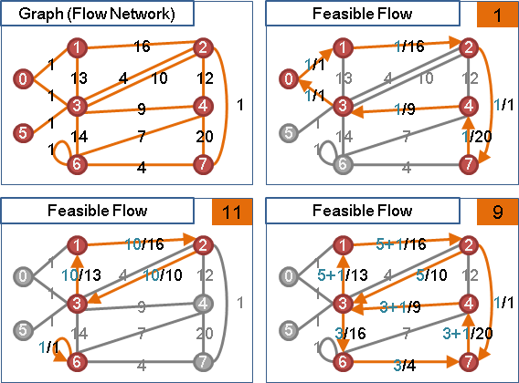 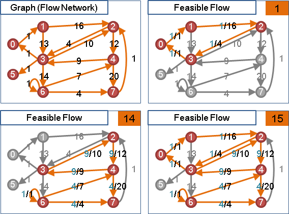要計算總流量，可將水流分解成數個環，以環流量的總和作為總流量。每次挑一條有水流的邊開始尋找環，最多分解成E個環。
Feasible Flow
「可行流」是符合容量限制的流，流量最低是零，流量最高是最大流流量。以擴充環增減流量所得到的流，通通都是可行流。
Supply / Demand
「供水點」有水注入、「需水點」有水漏出，彷彿源點與匯點。圖上可以有多個供水點與需水點，供水量總和必須等於需水量總和，才有機會形成可行流。
圖上每一點皆有供需水量：supply的供需水量為正值，該點流出多於流入；demand的供需水量為負值，該點流入多於流出；其他的點的供需水量為零，流入等於流出。
供需水量 = 最後流出水量 - 最後流入水量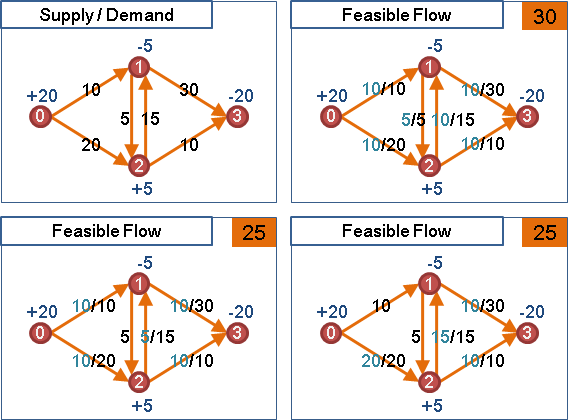
【註：有了supply與demand之後，總流量的定義就不明確了。這裡姑且定義成：supply的總和，再加上不受supply與demand影響的循環流流量。】
Excess / Deficit
「餘水點」水量超出平衡，「缺水點」水量低於平衡。當圖上有excess與deficit，表示流量不平衡，不是可行流。
餘缺水量 = 當前流入水量 - 當前流出水量 + 供需水量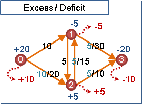
最大流最小割定理
任意一個割，甲側的供需水量總和，必須小於等於甲側到乙側的管線容量總和，才能形成可行流。
任意一個割，甲側到乙側的容量下限總和，必須小於等於甲側到乙側的容量上限總和、也要小於等於乙側到甲側的容量上限總和，才能形成可行流。
演算法
求可行流：不斷尋找起點為supply、終點為demand的擴充路徑，進行擴充後就根據水量減損supply、增益demand，直到圖上沒有supply與demand為止。
換句話說。新增源點與匯點，源點接至supply，容量為供水量；demand接至匯點，容量為需水量。然後嘗試求最大源匯流，若源點管線與匯點管線皆滿溢，則有可行流，反之則無。拆除源點管線與匯點管線，最大源匯流就變成可行流。
簡單來說，可行流能用最大源匯流求得。
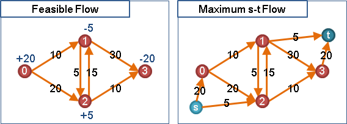求最小可行流：堅持使用擴充路徑而不是擴充途徑，最後得到的可行流，即是最小可行流。【尚待確認】
求最大可行流，或者說，最大流：先找出任意一個可行流，然後不斷找擴充環即可。
至於無向邊、容量下限的處理方式，請參考下面Minimum Cost Flow的章節。
ICPC 4597
Minimum Cost Flow（Under Constuction!）
程度★★★ 難度★★
Minimum Cost Flow
「最小成本流」省略了「可行」二字，是指成本最小的可行流，可能會有許多個。
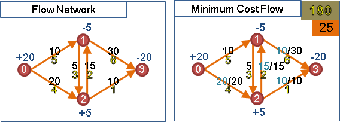附帶一提，可行源匯流可化作可行循環流，只要增加一條匯點到源點的管線，容量上限為無限大（圖上所有邊的容量總和），成本為無限小。可行源匯流可視作可行循環流的特例。
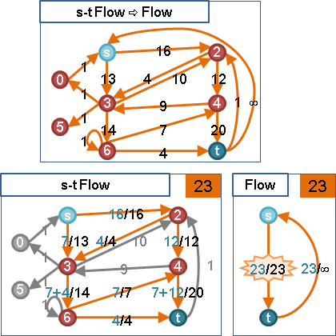附帶一提，可行循環流又可化作最大源匯流，上個章節提過。
容量下限變成零
先前都沒有討論容量下限。事實上，有向邊的容量下限，得移轉至supply與demand。預先流水，水量等於容量下限：
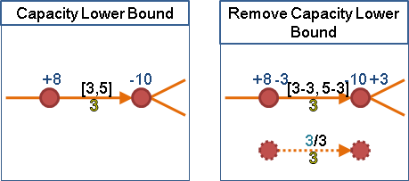必須紀錄每條邊的預流水量與耗費成本，以利之後還原。
容量上限變成無限大
移除容量下限之後，可以進一步移除容量上限。把兩點改接至一個新點：
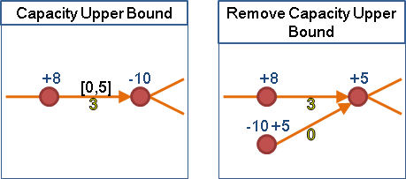移除容量上限後，可行流就變成某種二分圖問題，得以設計更簡潔的資料結構與演算法。
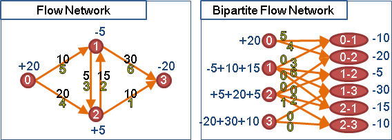一般來說，最大流演算法皆支援容量上限，沒有必要移除容量上限，反倒是必須設定容量上限。
負成本變成正成本
運用溯洄沖減，可以把負成本變成正成本。預先流水，水量等於容量上限：
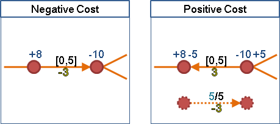必須紀錄每條邊的預流水量和耗費成本，以利之後還原。
因此，在Flow當中，只討論非負成本、有容量上限、無容量下限、有supply與demand的情況就可以了。
無向邊變成有向邊
沒有容量下限且成本非負時，可以把一條無向邊變成兩條有向邊，再把來回水流變成單向水流，最後只要從中選擇一條有向邊來流動就可以了。
沒有容量下限且成本為負時，
有容量下限時，則無法等價替換。此時是NP-complete問題。
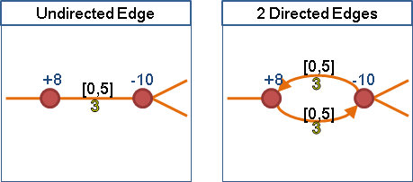演算法
最小成本流演算法，與先前提到的最小成本最大源匯流演算法相同，只是要額外考慮feasible flow、supply、demand等等後來才添上的概念。
Cycle Canceling Algorithm：必須先找到任意一個可行流，再以負成本環進行擴充。
Successive Shortest Path Algorithm與Primal-Dual Algorithm：改為不斷尋找起點為excess、終點為deflict、成本最小的擴充路徑，直到所有excess與deflict成為零。如果excess與deflict沒有同時成為零，則沒有可行流。
http://www3.tcgs.tc.edu.tw/npsc/index.php?topic=128.0
ICPC 3787 4722 5131 UVa 1259
Maximum Closure
程度★★ 難度★★
Maximum Closure
http://en.wikipedia.org/wiki/Closure_problem
一張有向圖，點有權重，邊無權重。現在要找出權重最大（小）的Closure。Closure是指圖上的其中一群點，這群點沒有連外的邊。
這個問題可以進行轉化，變成求Minimum s-t Cut。首先要把原來的圖，重新打造成一個網路流量圖。
1. 新增一源點s及一匯點t。 2. 圖上一個權重為正值的點v⁺， 就從源點s拉一條邊連至v⁺，此邊的容量為v⁺的權重。 圖上一個權重為負值或零的點v⁻， 就從v⁻拉一條邊連至匯點t，此邊的容量為v⁻的權重。 圖上原來的邊都留著，邊的容量設定為無限大。 圖上原來的點都留著，點的權重全部去掉。 3. 測試源點s是否能到達匯點t。 如果不行，那麼源點s所能到達的點，即是Maximum Closure。 如果可以，那就繼續下面步驟。 4. 算Maximum s-t Flow。 根據最大流最小割定理，同時也算得Minimum s-t Cut。 5. 在Minimum s-t Cut當中， 由s側往t側肯定不會包含容量無限大的邊， 因為它必須Minimum。 因此可推論出： Minimum s-t Cut的s側， 對應到原圖，就是沒有往外的邊，所以會是一個Closure。 至於由t側往s側則可能會有容量無限大的邊， 所以t側不見得是一個Closure。 6. 根據加加減減的數學推導，可以發現： Maximum Closure會是s側的點去掉源點s。 Maximum Closure的權重，會是原圖上所有v⁺的權重總和，減去Maximum s-t Cut的權重。 如果前面的Minimum s-t Cut，是s側點數最少的Minimum s-t Cut。 那麼這裡的Maximum Closure，也會是點數最少的Maximum Closure。 X. Mininum Closure的求法也相當類似， 建立網路流量圖的時候，拉一條邊的方式要做點改變就是了。
PKU 2987
最大流演算法整理
關於最大流問題的演算法，網路上資料很多，名稱天花亂墜，內容眾說紛紜，看著看著都糊塗了。
我手邊有兩本談到網路流的書：
Introduction to Algorithms [CLRS]
Network Flows: Theory, Algorithms and Applications [AMO]
就拿這兩本書進行整理。
首先是CLRS的部份，讀者可以隱約發現最大流問題的演算法，在這本書中被分類成兩種主要的類型，一種是以Ford-Fulkerson演算法為基礎的擴充路徑類型，另一種是以Push-Relabel演算法為基礎的預流推進＋高度標號類型。
1. Ford-Fulkerson演算法：不斷找擴充路徑。時間複雜度O(EF)，這是假設找一次擴充路徑需時O(E)的情況下。F是最大流流量。
2. Edmonds-Karp演算法：不斷找最短擴充路徑。注意到實作的時候，是用O(VE)次BFS找擴充路徑，資料結構必須是adjaency lists，BFS才會是O(E)，總時間複雜度才會是O(VEE)。如果資料結構是adjacency matrix的時候，BFS其實是O(VV)，做不出理論上的時間複雜度。
3. Push-Relabel演算法：每個點都有高度標號，push和relabel的順序隨意。時間複雜度O(VVE)，受限於push的總次數，至於push的次數受限於relabel的次數。
4. Relabel-to-Front演算法：加上discharge的概念，然後以插隊的方式進行discharge。時間複雜度O(VVV)，是用詭異的均攤分析算出來的。
（註記：其實只要是用了discharge的演算法，只要照著admissible network之拓樸順序discharge，基本上都會是O(VVV)。）
接著是AMO所提到的多項式時間演算法。這本書的觀點與CLRS不同，他先介紹最短距離標號的概念，然後任何一個演算法套上最短距離標號就會變快。
（註記：最短距離標號其實就是一種高度標號。）
1. Capacity Scaling 演算法：對管線容量使用scaling method，分成logC個階段，每階段最多可以擴充E大小的流量，擴充流量時套用最慢的Ford-Fulkerson演算法，就可以達到 O(EElogC)的時間複雜度了。如果套上最短距離標號，可以加速到O(VElogC)。
2. Shortest Augmenting Path演算法：其實就是Edmonds-Karp演算法，時間複雜度O(VEE)。如果套上最短距離標號，可以加速到O(VVE)。套上最短距離標號後的結果，其實可以看做是Push-Relabel演算法的一種實作方式，實作的方式是在admissible network上面以DFS順序進行push，找不到路徑而要回溯時，就做relabel。時間複雜度等於Push-Relabel演算法的時間複雜度 O(VVE)。
（註記：中文網路上把這演算法說得有夠厲害。真是奇怪。）
3. Distance Labels and Layered Networks章節：其實就是網路上流傳的Dinic演算法。分層圖其實就是最短距離標號。這個演算法跟Edmonds-Karp演算法的思路一樣，只不過它是一口氣找完所有的最短擴充路徑（即是blocking flow），然後一口氣擴充，如此反覆做O(V)次即得最大流。
實作時要注意到，每階段會有O(E)條最短擴充路徑，必須用O(V)時間找到一條擴充路徑，如此一來找blocking flow才是O(VE)，整個演算法才是O(VVE)。DFS和BFS再怎麼厲害都是O(VV)或是O(E)，要達到O(V)就不能使用DFS和BFS來找擴充路徑，必須妥善利用分層圖的特性，建立適當的資料結構來找擴充路徑。
4. Generic Preflow-Push演算法：就是CLRS的Push-Relabel演算法。
5. FIFO Preflow-Push 演算法：其實就是網路上流傳的Goldberg-Tarjan演算法。實作時用一個queue記錄overflowing vertex，照順序一直做discharge就可以了。時間複雜度O(VVV)。這個演算法在CLRS的節末證明題中有出現，只是沒給出名稱。
6. Highest-Label Preflow-Push演算法：最高點做discharge，利用特別的方式記錄最高點，以及特別的discharge方式，時間複雜度可以達到O(V*V*sqrtE)，在前面幾個演算法當中，理論上速度最快的一個。
（註記：使用一般的priority queue來排序高度，不照著書上寫的方式做，時間複雜度是O(VVV)。）
7. Excess Scaling演算法：有興趣的自己看吧。